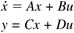
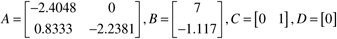
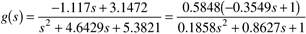
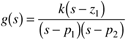
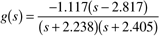
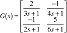
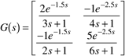

| [ Team LiB ] |
|
M4.1 Forming Continuous-Time ModelsContinuous-time models can be specified in one of three forms: state space (ss), transfer function (tf), and zero-pole gain (zpk). The commands for forming these models are sys = ss(a,b,c,d) % state space sys = tf(num,den) % transfer function sys = zpk(z,p,k) % zero-pole-gain where sys is the desired name of the model formed in each case. The a,b,c,d terms are the state space matrices. The num and den terms are vectors of polynomial coefficients, in decending order of powers in s. The z and p terms are row vectors of zero and pole locations (roots of numerator and denominator polynomials, respectively), while k is the gain term (note that this is not necessarily equal to the gain of the transfer function as we know it). We use the van de Vusse reactor example from Module 5 to illustrate the use of each. The following sections illustrate how state space, transfer function, and zero-pole gain models are directly entered. Then we illustrate how to convert between the different model forms. State SpaceThe state space model is  where the parameter values for the van de Vusse CSTR result in  The matrices are each entered in the MATLAB Workspace: » a = [-2.4048,0;0.8333,-2.2381]; » b = [7;-1.117]; » c = [0,1]; » d = [0]; The state space object command is used (note that we name our system vdv_ss for convenience): » vdv_ss = ss(a,b,c,d) The model is reported in the MATLAB command window:
a =
x1 x2
x1 -2.4048 0
x2 0.8333 -2.2381
b =
u1
x1 7
x2 -1.117
c =
x1 x2
y1 0 1
d =
u1
y1 0
Continuous-time system.
The poles and zeros can be calculated using the pole and tzero commands. » pole(vdv_ss) ans = -2.2381 -2.4048 » tzero(vdv_ss) ans = 2.8173 Clearly, the system is stable (the poles of the transfer function = the eigenvalues of the A matrix = negative, indicating stability) and contains a RHP zero, indicating an inverse response. Transfer FunctionThe transfer function model is  The numerator and denominator polynomials are entered: » num = [-1.117,3.1472]; » den = [1,4.6429,5.3821]; The transfer function object command is entered: » vdv_tf = tf(num,den) The result is displayed: Transfer function: -1.117 s + 3.147 --------------------- s^2 + 4.643 s + 5.382 » pole(vdv_tf) ans = -2.4048 -2.2381 » tzero(vdv_tf) ans = 2.8173 Again, the RHP zero indicates an inverse response. Zero-Pole GainThis structure is not often used by process engineers. It is similar to the transfer function form, but the polynomials have been factored to clearly show the zeros and poles. An example with one zero and two poles is  Notice that the gain term, k, is not the same as the process gain and is definitely a source of confusion. Consider the transfer function with the following zero-pole-gain form (you should be able to write the previous transfer function in this form):  The MATLAB command, followed by the result displayed, is » vdv_zpk = zpk(2.817,[-2.238 -2.405],-1.117) Zero/pole/gain: -1.117 (s-2.817) ------------------- (s+2.238) (s+2.405) Converting Between Model TypesA model in any one of the standard forms can easily be converted to another standard form. Converting from State Space FormAs an example, assume that the state space form has been entered as » a = [-2.4048,0;0.8333,-2.2381]; » b = [7;-1.117]; » c = [0,1]; » d = [0]; » vdv_ss = ss(a,b,c,d) The transfer function form can found from the state space form using » vdv_tf = tf(vdv_ss) and the MATLAB command window displays the following: Transfer function: -1.117 s + 3.147 --------------------- s^2 + 4.643 s + 5.382 Also, the zero-pole-gain form can be found from the state space form using » vdv_zpk = zpk(vdv_ss) Zero/pole/gain: -1.117 (s-2.817) ------------------- (s+2.238) (s+2.405) An alternative approach is to use ss2tf or ss2zp, [num,den] = ss2tf(a,b,c,d,iu) [z,p,k] = ss2zp(a,b,c,d,iu) where iu is the ith input variable (2, if you want the transfer functions relating input 2 to all of the outputs). If there is more than one output, then num will be a matrix of elements, where each row contains the coefficients of the polynomial associated with that output (row 1 is the numerator polynomial for output 1, etc.). Converting from Transfer Function to State Space FormAssume that the transfer function form has been created: » num = [-1.117,3.1472]; » den = [1,4.6429,5.3821]; » vdv_tf = tf(num,den); The state space form can be found by using
»vdv_ss1 = ss(vdv_tf)
a =
x1 x2
x1 -4.6429 -1.3455
x2 4 0
b =
u1
x1 1
x2 0
c =
x1 x2
y1 -1.117 0.7868
d =
u1
y1 0
Continuous-time system.
Recall that there are many state space models that yield the same transfer function model. The state space realization of a transfer function, used by MATLAB, is known as the controllable canonical form. Notice that this form in this example (vdv_ss1) is different than the original state space form (vdv_ss). You should show that either state space form results in the same transfer function. Multiple Inputs and/or OutputsThe above examples have illustrated LTI objects that are SISO. The extension to MIMO is straightforward for the state space model (simply increase the dimensions of the matrices appropriately. For transfer functions, the easiest way to form a MIMO transfer function matrix is to concatenate the individual matrix elements. Consider  Enter all the individual transfer functions, then specify the elements in the transfer function matrix: » g11 = tf([2],[3 1]); » g12 = tf([-1],[4 1]); » g21 = tf([-1],[2 1]); » g22 = tf([5],[6 1]); » G = [g11 g12;g21 g22] MATLAB returns the following:
Transfer function from input 1 to output...
2
#1: -------
3 s + 1
-1
#2: -------
2 s + 1
Transfer function from input 2 to output...
-1
#1: -------
4 s + 1
5
#2: -------
6 s + 1
Input Time DelaysMost chemical processes have significant time delays that can cause control problems. The LTI objects assume that the time delay is on the inputs. This means that each column of a transfer function matrix, for example, is assumed to have the same time delay. Consider the previous two input–two output transfer function matrix, with time delays of 1.5 and 2.5 time units on input 1 and 2, respectively:  Since the delay-free transfer function has already been generated, we can add input delays using the following: » set(G,'InputDelay',[1.5 2.5]) The new transfer function properties can be found using
» G
Transfer function from input 1 to output...
2
#1: -------
3 s + 1
-1
#2: -------
2 s + 1
Transfer function from input 2 to output...
-1
#1: -------
4 s + 1
5
#2: -------
6 s + 1
Input delays (listed by channel): 1.5 2.5
Delays to state-space models can be handled in a similar fashion. |
| [ Team LiB ] |
|